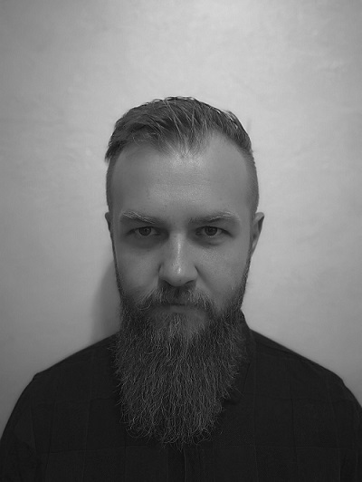

Skipper Kokot Patryk  Witam nazywam sie Kokot Patryk urodziłem sie 15.06.1986r od paru lat zaczołem Żeglowac,Moją jednostka jest albin accent 26 posiadam go od niecalego roku.Wczesniej uprawaiłem kiteserfing